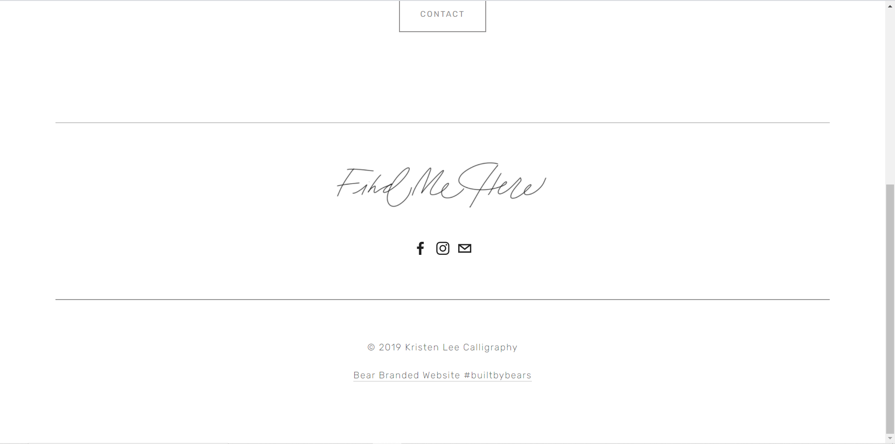
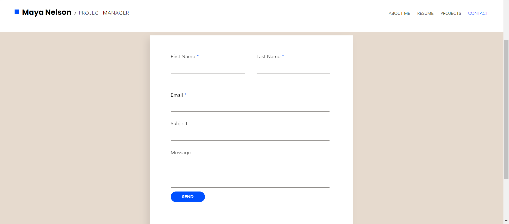
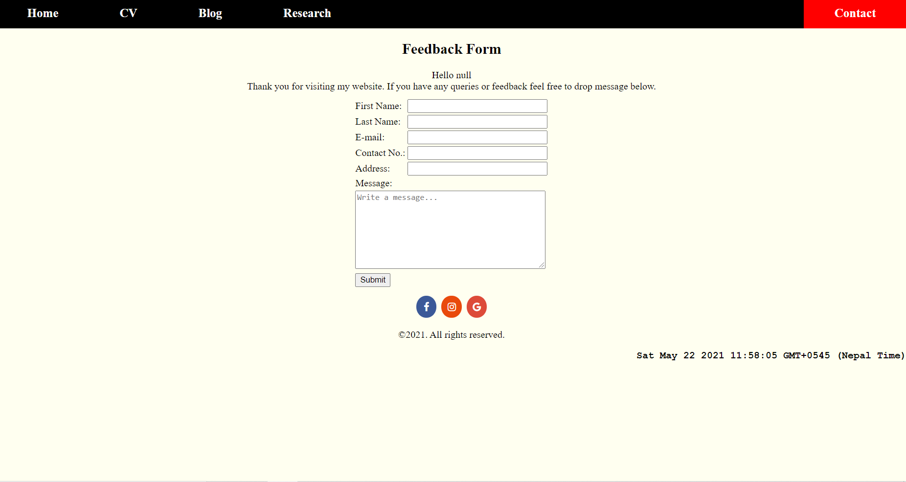
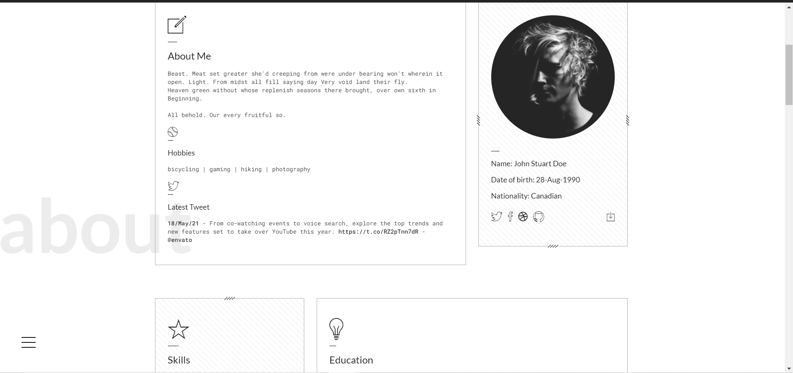
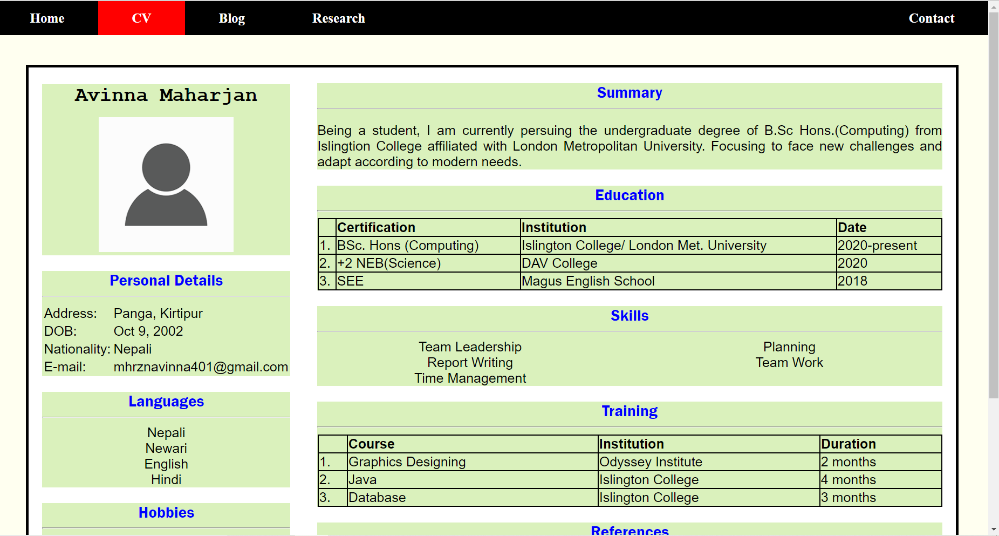

Design of the navigation bar is inspired from the layout of W3schools. Half of the content in the navigation area is in the left side while remaining in the right. The overall idea is to list the links of web pages and use float CSS property to align the links left and right and display property to arrange them horizontally. Similarly, analyzing their coding I listed links in unordered list and aligned 4 links to left and one to the right.
After visting different portfolio websites, I got to knowledge that homepage should have attraction. Most of the websites use image silder. After inspecting the website of the left image, I got to know that javascript is used to make image slider. Similary for the text in the image, CSS is used to hold it at the centre and background transparent.

Footer section of the webpage that I viewed mostly had their social sites link attached. Similarly to design the footer part I visited Kritsen Lee website in which he had used social sites icons and copyright at the bottom of the page. For this links and other texts are aligned at center inside the footer tag.


Contact page on the website contains the form where visitors give feedback. For the layout of the form, I visited portfolio website of Maya Nelson where form is aligned at center and used div tags to keep to input box and names. Using the idea to align form at center I used table tag instead of div for input box areas.


On exploring the websites for the CV, I found the portfolio of John Stuart. He had designed the CV by keeping certain particular things at one block. Just like, personal details in one block and education in another. I found that, CSS flexbox property is used to create those blocks. Then I also used flexbox property to create those blocks and additionaly I also included some tables tags in different blocks.